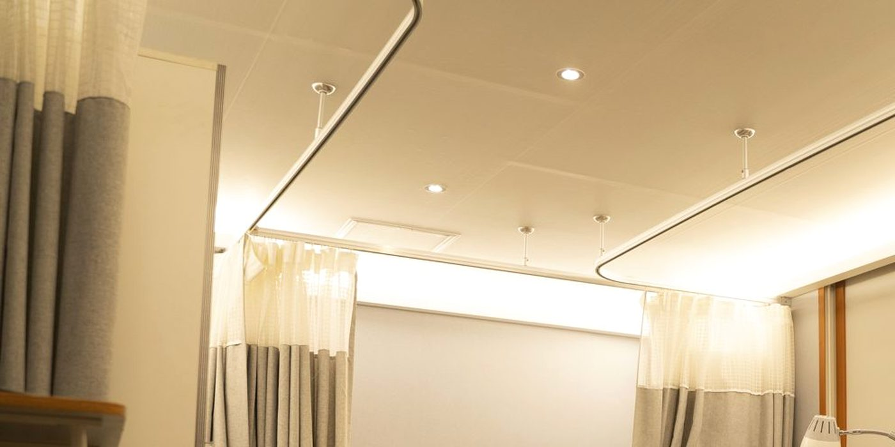

한 줄 답변
임신 중이거나 임신 가능성이 있다면 접수와 진료 시작 때 먼저 알려 주셔야 하고, 마지막 생리 시작일과 복용 중인 약을 함께 말씀해 주시면 진료 방법을 안전하게 정하는 데 도움이 됩니다.
임신 중이거나 임신 가능성이 있다면 접수와 진료 시작 때 먼저 알려 주셔야 하고, 마지막 생리 시작일과 복용 중인 약을 함께 말씀해 주시면 진료 방법을 안전하게 정하는 데 도움이 됩니다.
임신 초기에는 본인도 임신 사실을 모르고 진료를 받는 경우가 있습니다. 임신 가능성이 조금이라도 있다면 진료 시작 때 먼저 말씀해 주세요.
알려 주시면 좋은 것
- 마지막 생리 시작일과 현재 임신 여부(임신 테스트 결과 포함)
- 병원에서 들은 임신 주수와 주의 사항
- 복용 중인 약, 영양제, 엽산 등
진료 전후에 이렇게 해 보세요
- 임신 중이라면 산부인과에서 받은 안내문이나 메모를 가져가기
- 입덧, 허리와 골반 통증, 수면 불편처럼 불편한 점을 정리하기
- 진료 중 배가 당기거나 불편하면 바로 알리기
한의원에서 함께 살필 수 있는 경우
- 임신 중 허리와 골반이 묵직하고 자세가 불편할 때 생활 자세와 함께 살핍니다.
- 입덧으로 식사가 힘들거나 잠이 얕을 때 하루 리듬을 함께 묻습니다.
진료실에서 이야기를 들은 뒤 어떤 방법이 맞을지 함께 정합니다.

알아 두면 좋은 점
임신 중에는 쓰지 않거나 조심해야 하는 치료와 약재가 있어 알려 주신 정보를 바탕으로 진료 방법을 정합니다. 출혈, 심한 복통, 양수가 비치는 느낌 같은 증상이 있다면 한의원보다 산부인과나 응급실을 먼저 이용하세요.
자주 묻는 질문
임신 사실을 아직 확신하지 못해도 말해야 하나요?
네. 생리가 늦어졌다면 가능성을 먼저 말씀해 주세요.
임신 중에도 한약을 먹을 수 있나요?
일률적으로 답할 수 없고 개인 상태와 처방에 따라 다릅니다. 임신 사실을 알린 뒤 상담을 통해 정합니다.
산부인과 진료와 같이 받아도 되나요?
함께 받으실 수 있으며 서로의 진료 내용을 알려 주세요.
이 글은 일반적인 건강 정보이며 개인의 진단이나 치료를 대신하지 않습니다. 증상이 있거나 복용 중인 약이 있다면 진료를 통해 확인하세요. 치료 효과는 개인마다 다를 수 있습니다.
지난 이야기부터 이어서 묻습니다
좋은꿈참사랑한의원 노량진점은 재진 때 지난번 이야기부터 이어서 여쭙니다. 진료시간과 예약은 오시는 길에서 확인하세요.
좋은꿈참사랑한의원 노량진점은 재진 때 지난번 이야기부터 이어서 여쭙니다. 진료시간과 예약은 오시는 길에서 확인하세요.